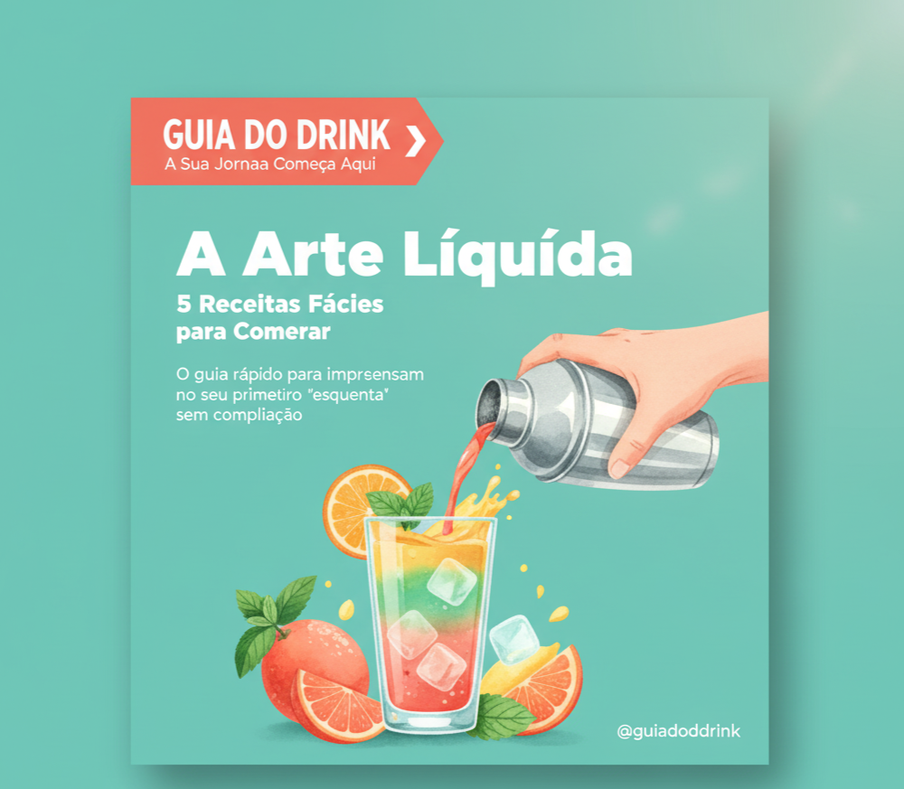

Cansado de errar a mão e deixar o drink aguado? Ou de sempre fazer a mesma mistura de gin tônica? O "Guia do Drink" criou um e-book gratuito para você que se sente intimidado pela coquetelaria e não quer gastar uma fortuna para se divertir.
Baixe o guia "A Arte Líquida" e descubra os segredos para fazer drinks clássicos sem complicação.
QUERO MEU E-BOOK GRÁTIS!
É rápido: preencha os campos abaixo e enviaremos o e-book "A Arte Líquida" direto para o seu e-mail em menos de 1 minuto.